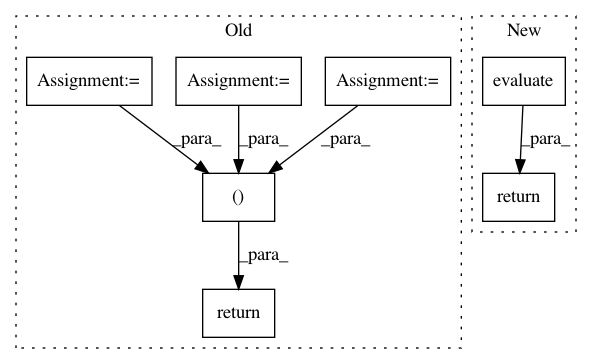

ee5bb2a6b05ef2e7a0bc60adf1e2c8641d64eac9,tmtoolkit/lda_utils/evaluation_sklearn.py,,evaluate_topic_models,#Any#Any#Any#Any#Any#,22
Before Change
if n_folds > 1:
split_folds = get_split_folds_array(n_folds, data.shape[0])
else:
split_folds = None
initializer_args = (shared_full_data_base, shared_sparse_data_base, shared_sparse_rows_base,
shared_sparse_cols_base, data.shape[0], data.shape[1], n_folds, split_folds)
eval_results = start_multiproc_eval(n_workers, _init_shared_data, initializer_args,
_fit_model_using_params, merged_params)
return eval_results
def _init_shared_data(shared_full_data_base, shared_sparse_data_base, shared_sparse_rows_base,
shared_sparse_cols_base, n_rows, n_cols, n_folds, split_folds):
After Change
mp_eval = MultiprocEvaluation(MultiprocEvaluationWorkerSklearn, data, varying_parameters, constant_parameters,
n_max_processes=n_workers, n_folds=n_folds)
return mp_eval.evaluate()
In pattern: SUPERPATTERN
Frequency: 3
Non-data size: 7
Instances
Project Name: WZBSocialScienceCenter/tmtoolkit
Commit Name: ee5bb2a6b05ef2e7a0bc60adf1e2c8641d64eac9
Time: 2017-09-27
Author: markus.konrad@wzb.eu
File Name: tmtoolkit/lda_utils/evaluation_sklearn.py
Class Name:
Method Name: evaluate_topic_models
Project Name: NervanaSystems/nlp-architect
Commit Name: bf6adcde668eefc374338ad639765f0de44e38e6
Time: 2018-07-08
Author: amit.yaccobi@intel.com
File Name: nlp_architect/models/np_semantic_segmentation.py
Class Name: NpSemanticSegClassifier
Method Name: eval
Project Name: WZBSocialScienceCenter/tmtoolkit
Commit Name: 7fb462e01a7f43afd5941fafbd8d61d87b8f7264
Time: 2017-09-27
Author: markus.konrad@wzb.eu
File Name: tmtoolkit/lda_utils/evaluation_lda.py
Class Name:
Method Name: evaluate_topic_models